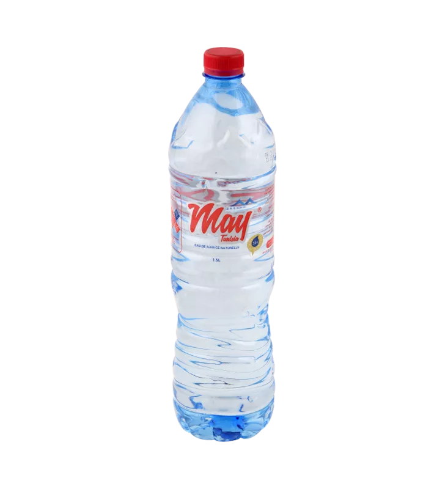

← Prix de toutes les eaux minérales en Tunisie

| Format | Prix bouteille par enseigne | Stika |
|---|---|---|
| 1.5 L | Carrefour 0,670 DT · Géant 0,670 DT | 4,020 DT (×6) |
| 2 L | Monoprix 0,890 DT | 5,340 DT (×6) |
Prix relevés le 28/09/2026 sur les boutiques en ligne des grandes surfaces — indicatifs, ils peuvent varier selon le magasin. Stika = pack de 6 bouteilles (12 pour les 50 cl).
eau de source — d'après les fiches de l'Office National du Thermalisme (source), en mg/L sauf pH.
| Résidu sec (TDS) mg/L | 567 |
| Calcium mg/L | 102.76 |
| Magnésium mg/L | 21.18 |
| Sodium mg/L | 71.09 |
| Potassium mg/L | 1.15 |
| Bicarbonates mg/L | 340.49 |
| Sulfates mg/L | 84.88 |
| Chlorures mg/L | 66.82 |
| Nitrates mg/L | 8.4 |
| Fluorures mg/L | 0.16 |
| pH | 7.1 |
Sur Prix des Eaux de Tunisie, ajoutez vos stikas May au panier avec le bouton +, indiquez votre adresse et recevez votre eau à domicile — le prix total et les frais de livraison vous sont confirmés sur WhatsApp, paiement à la livraison.